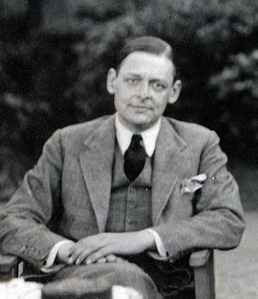

About the writer
Thomas Stearns Eliot (1888-1965) was an American-British poet, playwright, and literary critic. He is widely regarded as one of the most influential poets of the 20th century.
Eliot's poetry often explored themes of modernism, spirituality, and the human condition. Some of his most famous works include The Waste Land, Four Quartets, and The Love Song of J. Alfred Prufrock.
In 1939, he published Old Possum's Book of Practical Cats, a collection of whimsical poems about feline characters. This book later became the foundation for Andrew Lloyd Webber’s musical Cats.
For more about T.S. Eliot's literary contributions, visit the T.S. Eliot Foundation: tseliot.com.
